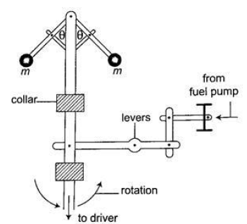

- Centrifuges - they are used to separate liquids of different densities i.e. cream and milk
- Drying clothes in spin dryer - clothes are placed in a perforated drum rotated at high speed, water is expelled through the holes and this makes the clothes dry.
- Road banking – especially for racing cars which enables them to move at critical speed along bends without going off the tracks.
- Speed governor – the principle of conical pendulum is used here to regulate the speed by controlling the fuel intake in the combustion chamber. As the collar moves up and down through a system of levers it thereby connects to a device which controls the fuel intake.

Uniform Circular Motion